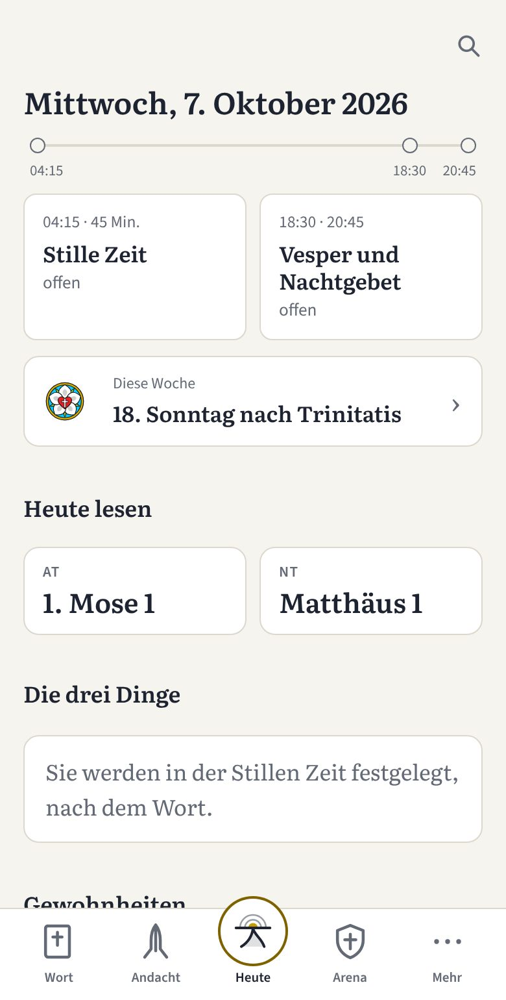
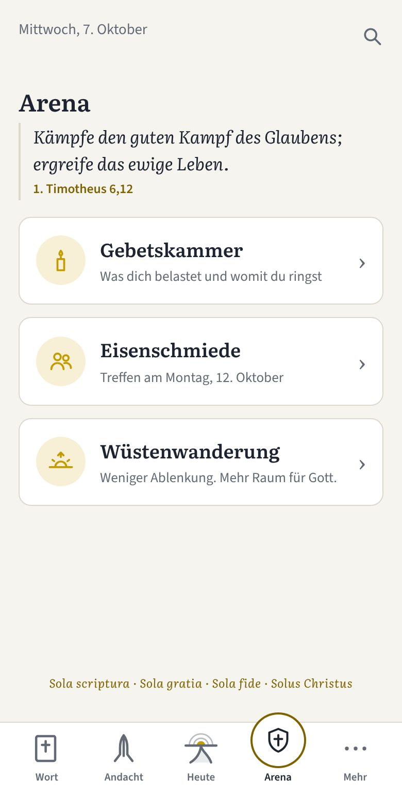
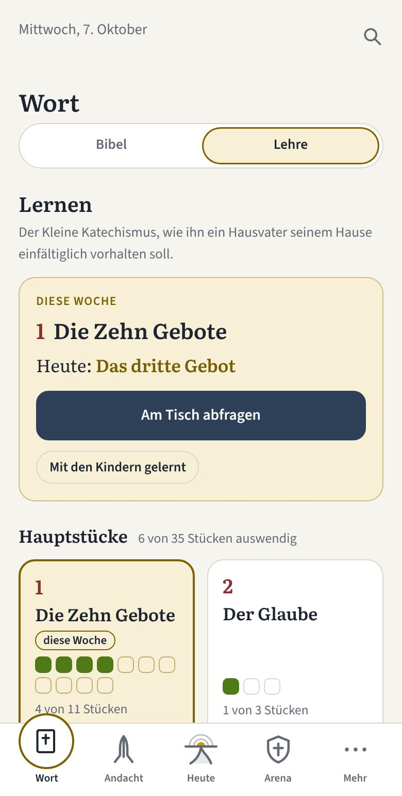

Was Henoch ist
Henoch ist ein Begleiter für Männer, die ihren Tag mit Gott beginnen und beschließen wollen: mit Gebet am Morgen und am Abend, mit Gottes Wort und mit dem Katechismus. Die App will kein weiteres Projekt neben Familie, Gemeinde und Arbeit sein, sondern das ordnen, was schon da ist, dort, wo Gott dich hingestellt hat. Der App-Name Henoch geht zurück auf Henoch, der „ein göttliches Leben führte“ (1. Mose 5,24), Tag für Tag mit Gott.
Gebetsordnung
Morgens und abends beten – mit einer festen Ordnung, die auch an vollen Tagen trägt. Auf Wunsch mit der geistlichen Waffenrüstung aus Epheser 6.
Bibellese
Die Bibel Abschnitt für Abschnitt lesen. Setzt du aus, machst du einfach weiter.
Gewohnheiten
Tischgebet, Gottesdienst, Abendmahl: im Blick behalten, was dir wichtig ist.
Tagebuch
Aufschreiben, wofür du dankbar bist und wofür du betest.
Mein Haus
Für die Menschen beten, die zu deinem Leben gehören, mit Namen und Tag für Tag.
Arena
Im Gebet ringen, Treffen mit Brüdern vorbereiten und in einer Wüstenzeit von 40 oder 90 Tagen dranbleiben.
Katechismus
Luthers Kleinen Katechismus lernen, allein oder mit deiner Familie.
Grundsätze
Gnade statt Leistung.
Keine Serien, keine Punkte, die verloren gehen – hier geht es um Ehrlichkeit und Wachstum.
Deine Daten bleiben bei dir.
Alles wird nur auf deinem Gerät gespeichert.
Das Wort zuerst.
Das Wort Gottes steht im Mittelpunkt und liegt in deiner Hand: Du liest in deiner eigenen Bibel. Gebete der lutherischen Väter, Luthers Kleiner Katechismus und Impulse zu den Evangelien und Episteln des Kirchenjahres helfen dir, geistlich zu reifen.



So installierst du Henoch
iPhone
Henoch in Safari öffnen, auf „Teilen“ tippen, dann „Zum Home-Bildschirm“.
Android
Henoch in Chrome öffnen, das Menü (⋮) öffnen, dann „App installieren“ oder „Zum Startbildschirm hinzufügen“.